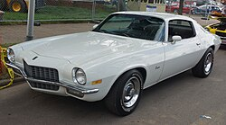

Second Generation Camaro (1970 - 1981)
Chevrolet's second-generation Camaro debuted on February 26, 1970 and ran through the 1981 model year. Although it grew larger and wider, it kept the original F-body formula: unibody with a front subframe, A-arm front suspension, and leaf-spring solid rear axle. Styling updates came in 1974 and again in 1978, while the 1980-81 Z28 added a functional hood scoop that opened at full throttle. The combined RS/SS package disappeared after 1972 (returning only decades later in 1996). Road & Track even ranked the 1971 SS 350 among its “10 Best Cars in the World.”
